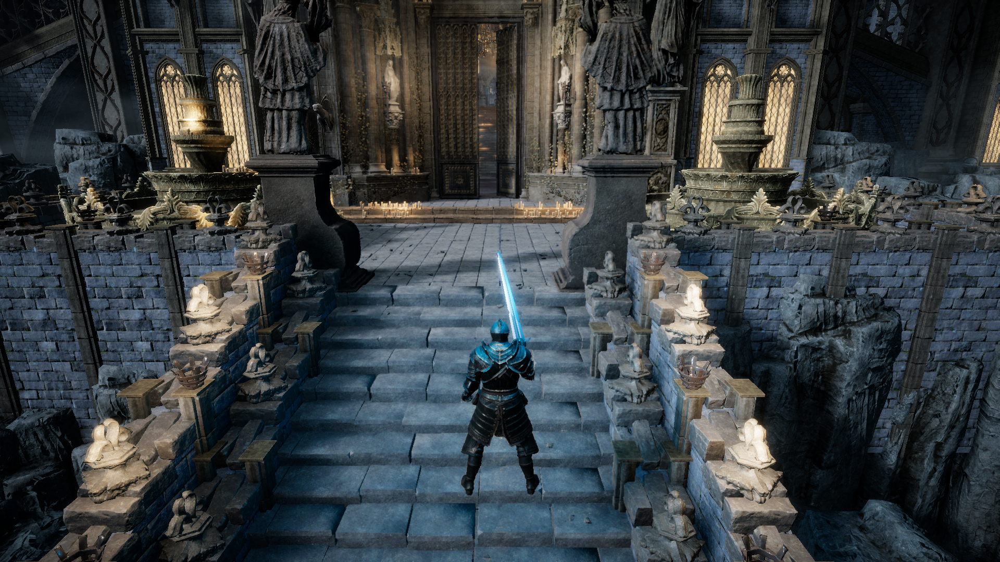

CONCEPT
컨셉 트레일러 제작
다크 판타지 폐허 도시의 톤앤매너와 고독한 기사의 실루엣을 시각화한 오프닝 영상 구축

GRADUATION PROJECT 2026 · DEVELOPMENT SHOWCASE
잿빛 옥좌 — 다크 판타지 소울라이크 1:1 보스전 총정리
PROLOGUE · OVERVIEW
⏱️ 20 SEC몰락한 왕국의 거대 성채, 그 심장부에서 펼쳐지는 1:1 보스 결투.
공식 웹사이트의 골드 프레임·파티클·타이포그래피를 100% 절차적 C# 코드로 구현
15m 석상 진입로 + 45m×35m 결투 광장 + 27m 고딕 대성문 및 HDRP 야간 횃불 조명
한손 장검 정밀 피팅 · 1~5단 풀 콤보 · E키 360° 대회전 검무 · 패링 & 배리어
4단계 페이즈 전이 · 롤캐치/엇박/카운터/궁극기 등 12가지 정밀 패턴 구사

THE WANDERER — 플레이어 기사 컨셉 & 인게임 PBR 아바타
HALL OF IDENTITY · WEB
⏱️ 20 SEC
THE KINGDOM HAS FALLEN.
ENTER THE RUINS. FACE WHAT REMAINS.
#0b0e14#1a1f2c#785d42#b89065#e4cca6#ded6cb#8f2828#a4b6c8FROM WEB TO ENGINE · INTRO
⏱️ 20 SEC
마우스 이탈 시 호버 광원이 영구 고정되던 문제를 해결해 0.3초 동안 부드럽게 초기화하며 키보드/패드 조작과 자동 분리됩니다.
HasPlayedIntroThisSession 정적 플래그 + isAlreadyInTarget 씬 체크 + 더블클릭 방지 가드로 2회 연속 로딩 버그를 100% 차단했습니다.
소울라이크의 묵직한 분위기에 맞춰 화면 점멸(Flash) 없이 딥 블랙 암전 페이드와 5종 세계관 로어(Lore) 순환만 사용합니다.
설명이 들어갑니다.
Leartes Fantasy Castle AAA 에셋 기반 FantasyCitadelBuilder.cs를 제작하여 15m 폭의 석상 진입 회랑(45m), 45m×35m 결투 광장, 27m 고딕 대성문과 외곽 타워 6기, 1800lm 야간 스탠드 횃불 14개를 완벽 구축했습니다. 시작 시 성채를 올려다보는 로우앵글(-6°) 오프닝 구도와 보스 24m 어그로 대기 시스템을 연동했습니다.
SM_Wep_Sword_03 한손 장검을 오른손 본 소켓(15°, 0°, -15°, 피벗 -0.08m)에 오차 없이 밀착시키고 상시 발도 하이가드 스탠스를 완성했습니다. 좌클릭 연타 시 1타 종베기→2타 올려베기→3타 횡베기→4타 회전베기→5타 피니시 강타(77 DMG)로 이어지는 5단 풀 콤보와 E키 360도 대회전 검무, 푸른 역장 가드 배리어 및 패링(+40 스태미나)을 구현했습니다.
과거 잔존 LateUpdate() 강제 회전 삭제, visualRoot Z축 뱅킹 제거, Move 8 Way Freeform Directional 2D 블렌드트리 구축, 씬 내 팔 본 Rest Pose 자동 복원으로 비틀림을 100% 해결했습니다. 또한 -0.22m 지면 밀착 구르기와 공격 중 슈퍼아머(enableHitAnimation=false)를 적용했습니다.
웹사이트의 디자인 토큰과 파티클을 100% C# 절차적 IMGUI 코드로 이식하고 3중 가드로 중복 로딩을 차단했습니다. 지연 감소 체력 트레일, 20% 탈진 틱 마크, 50% 각성 마커를 갖춘 인게임 HUD와 4페이즈 12패턴(롤캐치·엇박·카운터·궁극기) 보스 FSM을 완성했습니다.